Project-Introduction
Web designing is all about using the programming language to create a layout in a web page. This project is also concerned with the skill of using the programming language like Html and CSS. Through this
project I am showing my skills in using html and css codes and language to develop a web page. This project has helped me increase my knowledge of the programming language.
To make this project successful, I have applied my full knowledge of programming language with proper planning and with best effort to make it a functional and effective.
This project consist of 5 different web pages: Home, Portfolio, Contact, Work-Experience and Site-report.
My experience of the module and learning the codes
I was very excited to get opportunity to learn the web development module. This module has helped me a lot to gain proper knowledge about coding and to execute the design in the web through the help of coding.
Before joining the module, I had a little knowledge about how to create a web page using html only, but after the exciting journey of learning the basics of web development, that is html and css in the module, I gained a great skills of implementing the html and css codes together to create an interactive web page.
While learning the codes theoretically and practically, I thought it wasn't that hard, but after doing a practical by myself I was frustrated as the codes I used were not working properly. So, I asked help from our modulator Mr. Chirag Thapa and he helped me with my problems which made me relieved. Overall, the journey of learning the codes in the module was difficult but was rewarding, and I look forward to gain and grow my skills in this field.
Working on nav bar
It is the only part that is same in all the pages which contains logo and the element that helps user to move one page to another by simply clicking on the list that is assigned to the page.
Home-page
Its the first layout page which contain short bio about me.
At first I used black background but it was not looking good
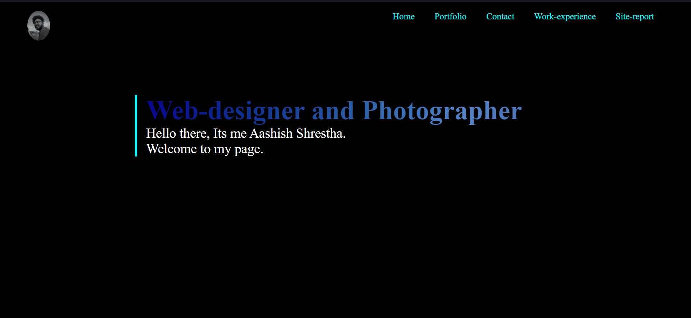
So I used my own picture as the background which simply looks good as the web is about me.
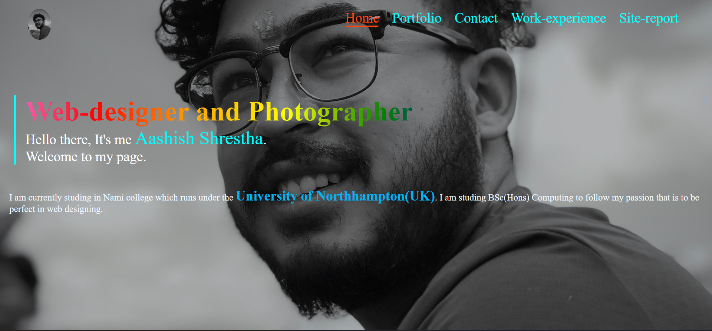
Portfolio
It is the second page of my website which contains the picture that I clicked
At first I just randomly placed the photos using different div but its didn't look good
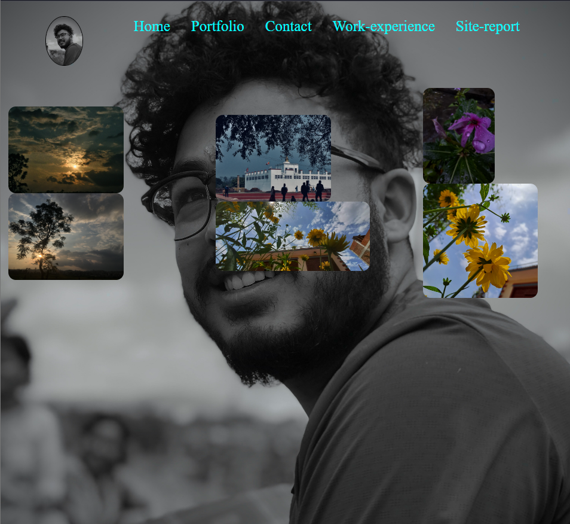
So I set margin in order to make it look like column and added hover effects for micro animation.
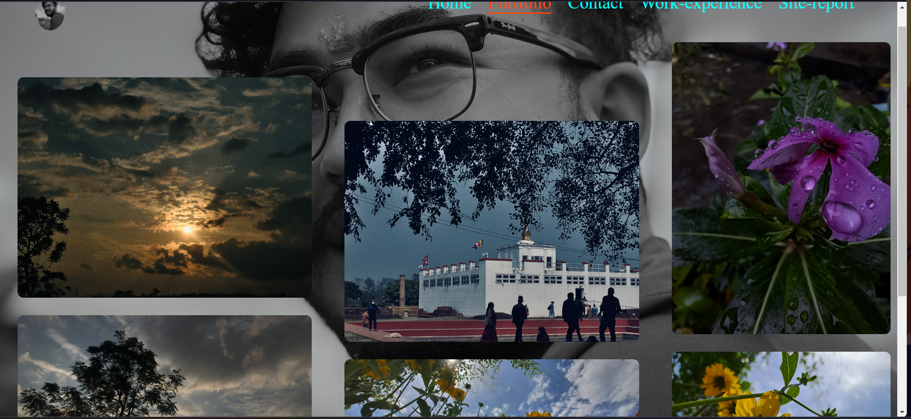
Contact
It contains my contact details and a form which lets the user to connect with me.
As in all pages I used back, white and aqua blue color coordination so at first I use aqua color as the back-ground in form but it was not looking good
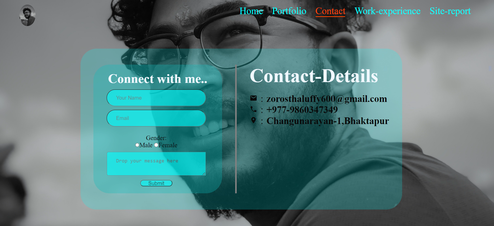
So I use black color with different opacity which perfectly match with the theme.
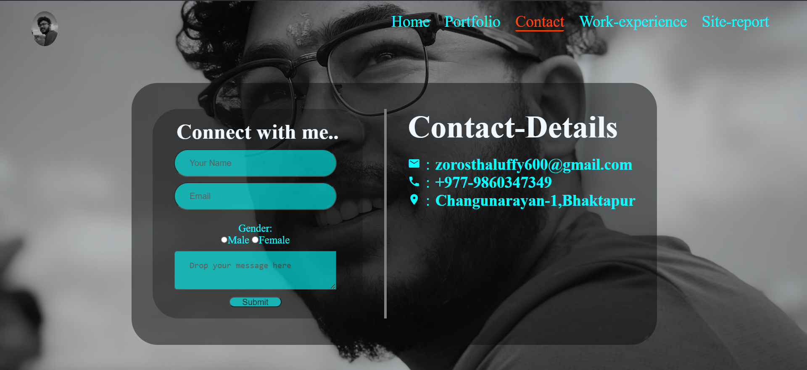
Work-Experience
It contains my experience's brief of working as web designer and photographer in different div.
Html and css code's validation check
Home
Html
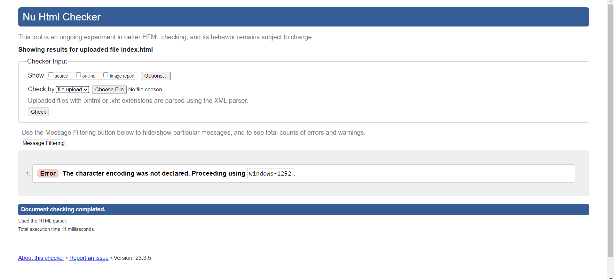
CSS
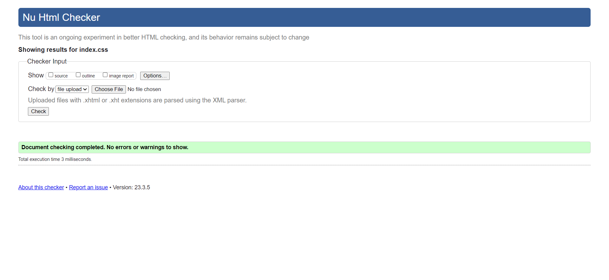
Portfolio
Html
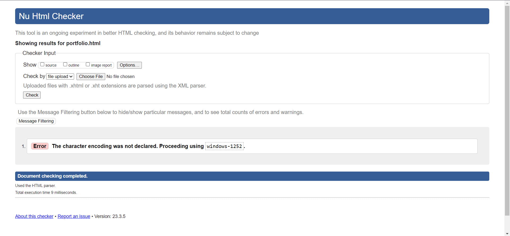
CSS
Contact
Html
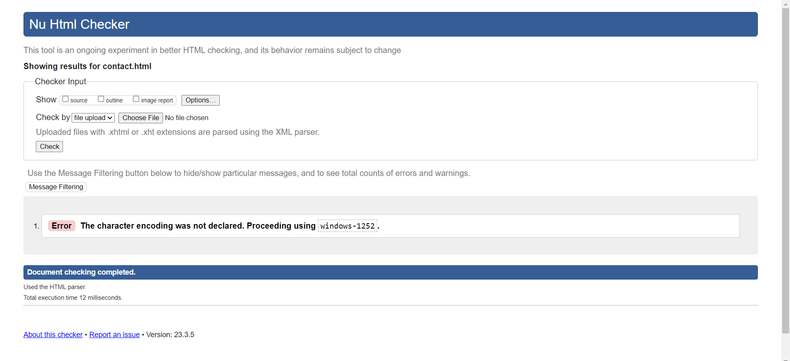
CSS
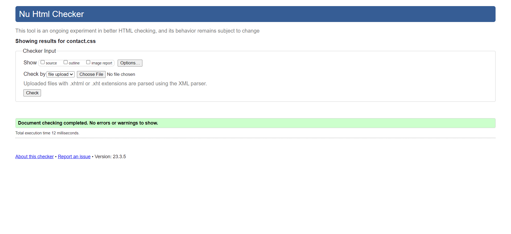
Work-Experience
Html
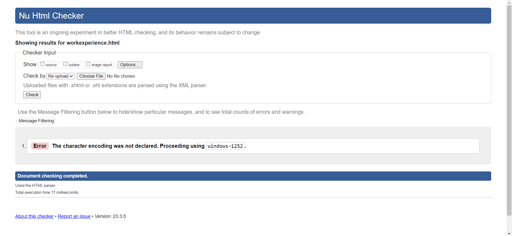
CSS

Site-Report
Html
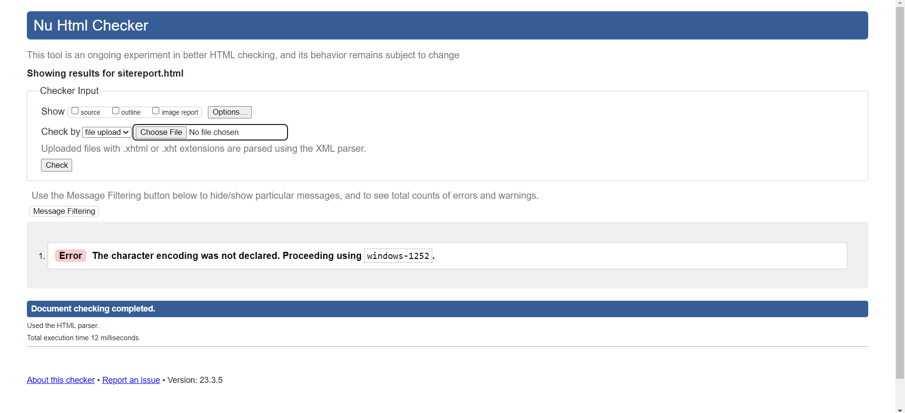
CSS
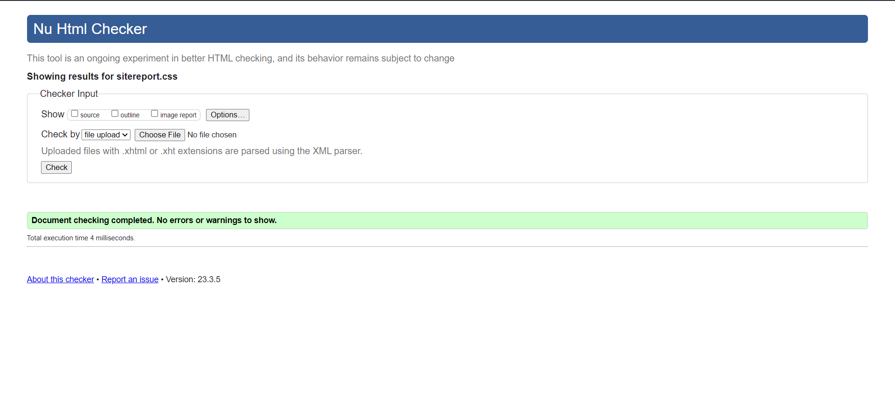
Style
CSS
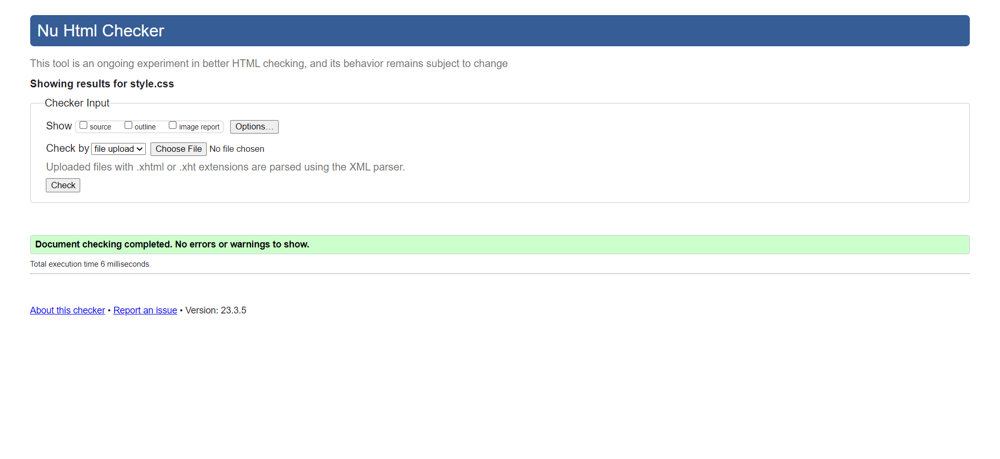